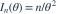

独立样本来自  （
（ ，
， ）。整个容量为 n 的样本关于
）。整个容量为 n 的样本关于  的 Fisher 信息是多少？
的 Fisher 信息是多少？
（，）。整个容量为 n 的样本关于 的 Fisher 信息是多少？- A

- B

- C
- D
我已思考，展开答案与解析
正确答案：A
- 单个观测的对数密度为 ，对 的二阶导数为
 。
。 - 支持区间不随参数变化，正则条件成立，因此单个观测的信息为 。
- 独立样本的信息可加，得到

。
易错提醒必须区分单个观测的信息和整个样本的信息。
南审 813 · 2025 · 二·2(2)，PDF第1页
从大题拆分考点并重新编写选项；数值或设问有调整。
查看参考来源